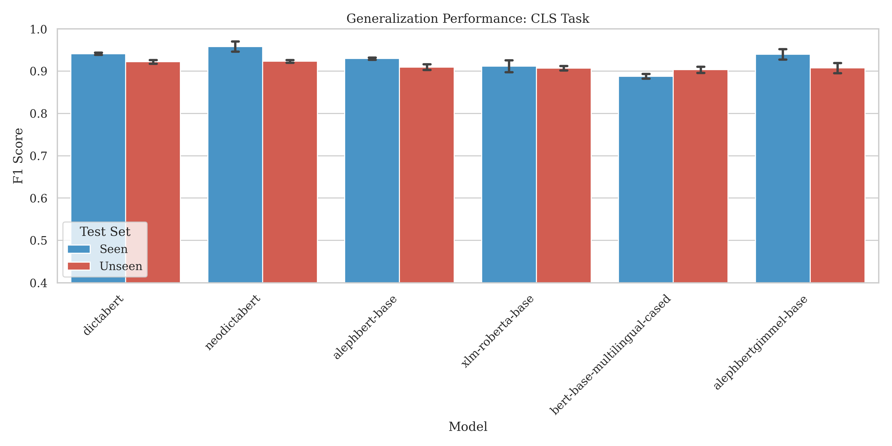
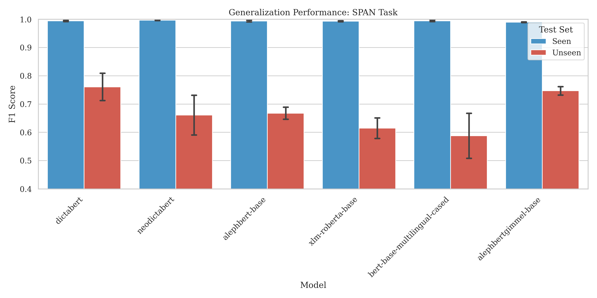
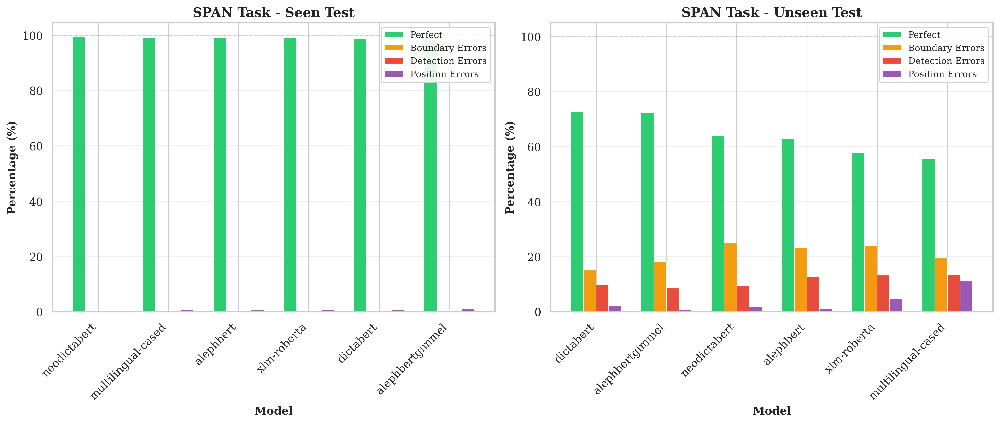
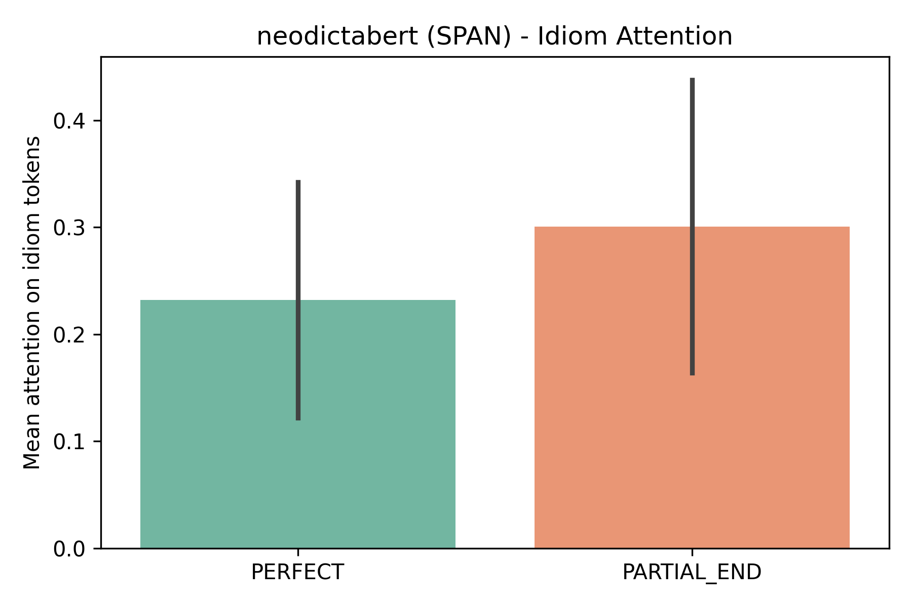
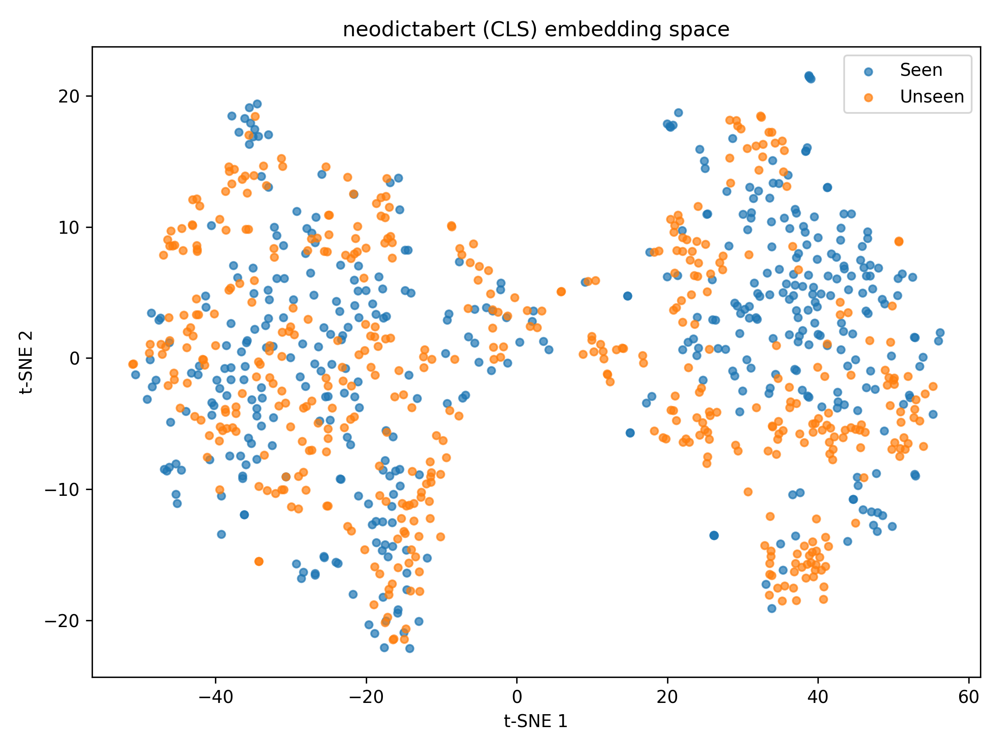
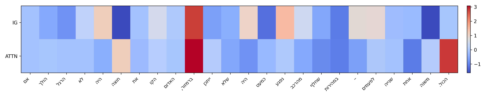

Primary Objective: Dataset Construction
Research & Evaluation
Dataset — Exceeded Plan
Research — Far Beyond "Optional"
Do transformers learn compositional idiom representations that generalize, or do they memorize specific expressions?
הוא שבר את הראש על הבעיה
Figurative: "He racked his brain over the problem"
Literal: Actual physical head injury
Models must use context to distinguish meaning — the words alone are identical.
Hebrew-Idioms-4800: 4,800 sentences, 60 idioms, dual-task annotations (classification + span), near-perfect IAA (κ = 0.97)
6 encoder models + 5 LLMs on both tasks, across seen & unseen idioms, with bootstrap CIs and paired statistical tests
Systematic boundary failures, 99.94% end-bias, length effects, attention paradox, and fine-tuning vs prompting reversal
Hebrew-Idioms-4800: Construction, annotation, and quality assurance
| Vocabulary size | 15,107 unique tokens |
| Total tokens | 83,844 |
| Mean sentence length | 17.5 tokens (83 chars) |
| Sentence range | 5–47 tokens |
| Mean idiom length | 2.5 tokens |
| Idiom length range | 2–5 tokens |
| Hapax legomena | 56.9% of vocabulary (words appearing only once — indicates rich, natural language variety, not templated text) |
| Split | Samples | % | Idioms |
|---|---|---|---|
| Train | 3,456 | 72% | 54 (seen) |
| Validation | 432 | 9% | 54 (seen) |
| Seen Test | 432 | 9% | 54 (seen) |
| Unseen Test | 480 | 10% | 6 (held-out) |
Perfect 50/50 literal/figurative balance in every split. Per-idiom: 32+32 train, 4+4 val, 4+4 test.
| Idiom | Tokens | Selection Rationale |
|---|---|---|
| חתך פינה | 2 | Basic transfer test |
| חצה קו אדום | 3 | Boundary metaphor — uses limit/threshold words figuratively |
| נשאר מאחור | 2 | Spatial metaphor — uses physical location words ("behind") to express abstract falling behind |
| שבר שתיקה | 2 | Common "break" pattern |
| איבד את הראש | 3 | Body-part idiom — uses body part ("head") for abstract meaning |
| רץ אחרי הזנב של עצמו | 5 | Longest; multi-token test |
6 encoder models, 5 LLMs, 2 tasks, seen vs unseen evaluation
| Model | Type | Params | Key Feature |
|---|---|---|---|
| AlephBERT | Hebrew | 110M | 52K vocab |
| AlephBERTGimmel | Hebrew | 110M | 128K vocab |
| DictaBERT | Hebrew | 110M | 50K vocab |
| NeoDictaBERT | Hebrew | 110M | 285B tokens, 4K context |
| mBERT | Multilingual | 110M | 104 languages |
| XLM-RoBERTa | Multilingual | 125M | 100 languages, 250K vocab |
| Gemini 3 Flash | Qwen 3 235B |
| Llama 4 Maverick | Llama 4 Scout |
| Dicta 3 Nemotron 12B | |
| Model | CLS Seen | CLS Unseen | Δ | SPAN Seen | SPAN Unseen | Δ |
|---|---|---|---|---|---|---|
| NeoDictaBERT | 95.83 ±1.20 | 92.35 ±0.32 | -3.48 | 99.65 ±0.12 | 66.12 ±7.01 | -33.53 |
| DictaBERT | 94.13 ±0.27 | 92.21 ±0.44 | -1.92 | 99.42 ±0.20 | 76.10 ±4.82 | -23.32 |
| AlephBERTGimmel | 93.98 ±1.23 | 90.75 ±1.19 | -3.23 | 98.96 ±0.12 | 74.70 ±1.51 | -24.26 |
| AlephBERT | 92.98 ±0.27 | 90.97 ±0.67 | -2.01 | 99.38 ±0.29 | 66.77 ±2.13 | -32.61 |
| XLM-RoBERTa | 91.19 ±1.39 | 90.69 ±0.53 | -0.50 | 99.35 ±0.18 | 61.48 ±3.63 | -37.87 |
| mBERT | 88.80 ±0.54 | 90.35 ±0.73 | +1.55 | 99.46 ±0.24 | 58.82 ±7.97 | -40.64 |
| Setting | Model | CLS Seen | CLS Unseen | SPAN Seen | SPAN Unseen |
|---|---|---|---|---|---|
| Zero-shot | Gemini3 Flash | 93% | 90% | 84% | 86% |
| Zero-shot | Qwen3 235B | 50% | 42% | 69% | 71% |
| Zero-shot | Llama4 Maverick | 47% | 43% | 61% | 67% |
| Zero-shot | Dicta3 Nemotron | 40% | 40% | 62% | 68% |
| Zero-shot | Llama4 Scout | 36% | 35% | 51% | 52% |
| Few-shot | Gemini3 Flash | 96% | 92% | 87% | 90% |
| Few-shot | Qwen3 235B | 67% | 57% | 75% | 72% |
| Few-shot | Llama4 Maverick | 59% | 57% | 69% | 71% |
| Few-shot | Dicta3 Nemotron | 47% | 47% | 67% | 72% |
| Few-shot | Llama4 Scout | 55% | 43% | 72% | 65% |



| PARTIAL_END | 1,761 |
| PARTIAL_START | 1 |
Models reliably detect idiom starts (B-IDIOM) but systematically fail to predict where idioms end.
5+ token unseen idioms:
70–100% error rate
רץ אחרי הזנב של עצמו
"Chased his own tail" (5 tokens): SPAN F1 = 0.023
Removing this single idiom raises unseen SPAN F1 from 0.68 → 0.82
Mean confidence on wrong predictions:
Systematically wrong with near-maximal confidence.
| Pattern | Fine-Tuning | Prompting |
|---|---|---|
| PARTIAL_END | 99.94% | ≈ 0% |
| PARTIAL_START | ≈ 0% | 5–13% |
Fine-tuned models anchor on B-IDIOM (idiom starts) but can't extrapolate where idioms terminate.
Prompting models lack this anchoring but apply more general boundary heuristics.
| Model | Literal Acc. | Figurative Acc. |
|---|---|---|
| Gemini3 Flash | 87% | 99% |
| Dicta3 Nemotron | 95% | 13% |
| Llama4 Maverick | 13% | 97% |
| Llama4 Scout | 2% | 86% |
| Qwen3 235B | 15% | 94% |
PARTIAL_END errors show higher idiom-token attention than correct predictions:
| Model | PERFECT | PARTIAL_END | Δ |
|---|---|---|---|
| NeoDictaBERT | 0.232 | 0.301 | +29.6% |
| XLM-RoBERTa | 0.178 | 0.256 | +43.9% |
Boundary failures are NOT due to missing idiom focus. Models attend to idiom tokens but cannot decide where the idiom terminates.


Heavy overlap between seen and unseen idioms in CLS embedding space → explains robust CLS generalization.

Current fine-tuned transformers classify idiomaticity through surface patterns but fail to learn compositional boundary cues that generalize to novel expressions.
Prompting offers a potential alternative for boundary generalization.
Our CLS task passes only the raw sentence without the idiom itself — unlike classical idiom identification that provides both sentence + idiom as input. Models must infer idiomaticity from context alone, simulating native language understanding.